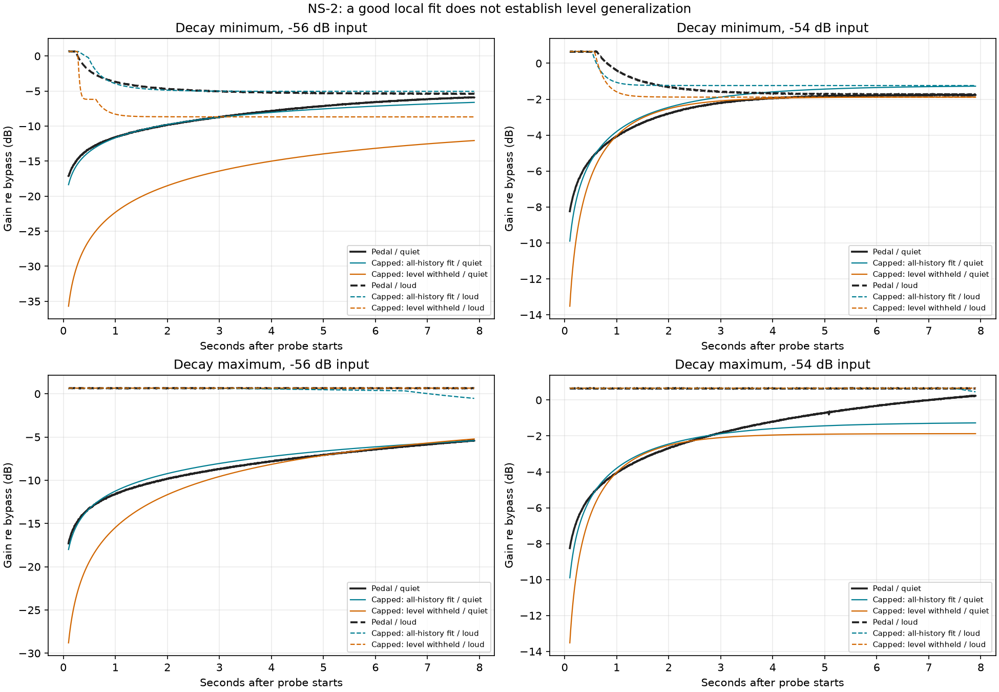
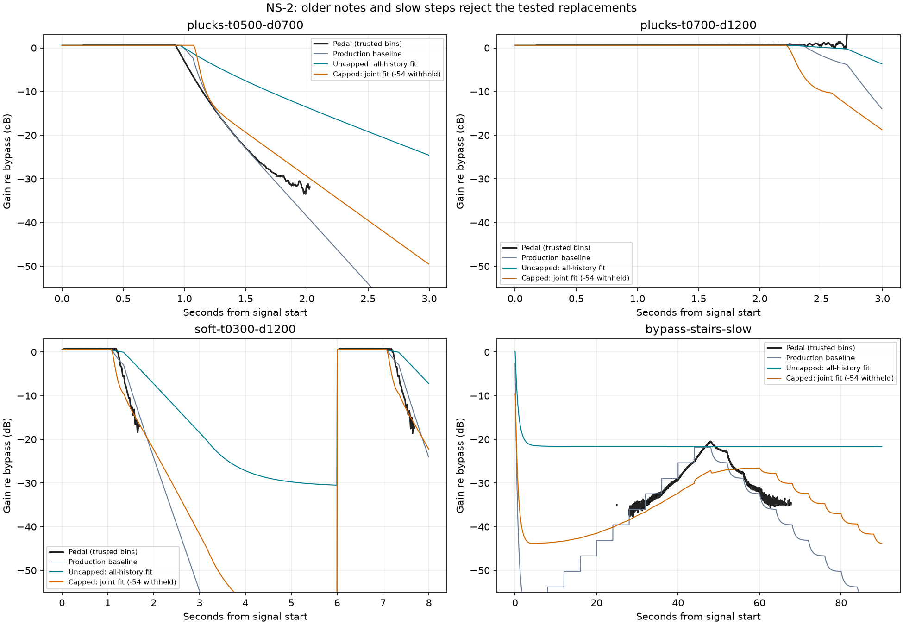

30 October 2026 · Five control-law candidates · 48 older regression captures · Two whole-level exclusion folds · Production DSP unchanged
Decision: retain the current NS-2 model. The new recordings expose a real near-threshold limitation, but the tested replacements do not improve the effect consistently. A continuous-switch model cuts the new packet's near-threshold fitting error from about 5.18 to .45 dB RMS, then makes older notes worse. Joint fitting and a bounded opening time reduce some failures but do not pass generalization checks. No additional captures are requested. None of the fitted candidate coefficients below is approved for production.
The measurement report remains the source for capture integrity, calibration and the observed quiet/loud histories. This continuation performs the previously proposed offline model selection. These are original-data calculations, not circuit identification or a listening verdict.
Every candidate sees the complete played signal, including its actual marker, preamble, quiet intervals and preceding probes. No per-probe initial state, threshold or gain is fitted. The same 50 ms peak detector precedes each model. The new packet retains the locator's frozen +.06005 dB open-path correction; older recordings retain the baseline +.6 dB open gain. There is no candidate-specific recalibration.
The regression set expands the original 39-envelope fitting set to 48 older takes by including the first session's nine slower-decaying pluck takes. All selected takes report zero xruns. The problematic stairs-110 is excluded. Exact played hashes are checked and recorded-file hashes are saved. The old dynamics recordings named “bypass” are correctly treated as engaged at Threshold 5:00 / Decay noon.
Measured gains use coherent carrier amplitudes: a 10 ms window at 1 kHz and approximately five cycles at 220 Hz. Old comparison bins require the recorded carrier to exceed the tail's median coherent amplitude by 20 dB, input between −95 and −6 dB relative to the guitar reference, and distance from abrupt transitions. This is a fixed noise-robustness mask shared by every model, not a confidence interval. The upper input exclusion avoids the previously observed high-level saturation. Signal gaps and untrusted tails are not scored.
The original true 1 kHz bypass transfer is −9.1882 dB. As in the earlier analysis, it also calibrates the old 220 Hz captures; the approximately .2 dB open-path flatness limit remains a systematic uncertainty. It cannot explain the multi-dB regressions. The new masks, added plucks and sample-level detector mean that the old-set scores here must not be compared directly with the original 1.52 dB median fit statistic.
The first three candidates reduce the control to one continuous state following the peak detector. They test whether simpler envelope behavior can replace the existing fast/slow/switch combination. Their exact parameter bounds, multistart results and equations in executable form are in the fitting script.
| Candidate | Mathematical structure | Reason to test it |
|---|---|---|
| Asymmetric envelope | Linear-amplitude rise with input-dependent time constant; dB-domain fall scaled by Decay; smooth static expansion curve. | A logarithmic observation of a linear-amplitude rise need not look like a one-pole rise in dB. |
| Leaky envelope | dv/dt = a(L) max(U−v,0) − bv; b scales inversely with Decay. | Simultaneous leakage can produce initially similar rises but different late levels. |
| Nonlinear charge | dq/dt = exp(c+(L−T+5.6)/s) − qm/(Dρ), 0≤q≤1; gain = g₀+20 log₁₀q. | State-dependent leakage could separate early charging from retained loud history without another state. |
| Continuous switch | Retain fast and slow states; replace the binary latch with a bounded continuous charge. Give the slow state a finite, level-dependent upward response. | Preserve more of the baseline's successful downward memory with the same state count. |
| Capped continuous switch | The preceding structure with a finite maximum upward time constant. | Test the diagnosed failure in which extremely weak input makes the uncapped rise effectively stop. |
The last two candidates have the baseline's peak state plus three control states. In continuous-time notation their tested structure is:
θ = T(knob) + δ; U = 10^((L−θ)/20) E rises immediately to L; when falling, dE/dt = (L−E)/D. τ↑(L) = exp(a − (L−θ+5.6)/s) If U > v: dv/dt = (U−v)/τ↑(L). Otherwise: d(20 log₁₀v)/dt = (L−θ−20 log₁₀v)/(7.94D). r(E) = exp(c + (E−θ+5.6)/w) dq/dt = r(E) − q/(Dρ), with q bounded to [0,1]. gain_dB = g₀ − J(1−q) − β max(0,−20 log₁₀v). Capped variant only: τ↑ ← min(τ↑, τmax).
Each constant-coefficient update uses its exponential solution, and gain reduction is limited to 140 dB. The coordinate q is fixed by its specified output law. The value 5.6 dB is a reference coordinate for the parameters, not a recovered physical threshold. Eight shared dynamic/transfer parameters are fitted for the uncapped structure and nine for the capped one; no control state is added.
Initial fitting uses all twelve new history groups, equally weighted; four groups are the easily opened −44 dB controls. The table reports the eight −56/−54 dB groups separately so those controls do not dilute the main error. Parameters are then frozen for all 48 older takes.
| Model | New near-threshold fitting RMS | Median RMS over 48 older takes |
|---|---|---|
| Production baseline | 5.177 dB | 1.817 dB |
| Asymmetric envelope | .978 dB | 4.054 dB |
| Leaky envelope | 1.767 dB | 4.471 dB |
| Nonlinear charge | 2.138 dB | 3.610 dB |
| Continuous switch | .447 dB | 3.840 dB |
| Capped continuous switch | About .446 dB | 3.857 dB |
These candidate screening values use a 1 ms control-rate surrogate, with new-history residuals sampled every 10 ms over 0.1–7.9 seconds per probe; the baseline's new-history value is from the previously frozen sample-rate rendering. The surrogate error is evaluated below. The three simple candidates fail even within the new packet: worst-group errors are 2.11, 2.69 and 4.61 dB. The two richer candidates fit much better locally, but neither explains the maximum-Decay −54 dB late rise fully.
The uncapped continuous model's slope β falls from the baseline's .889 to .308 in the packet-only fit. This helps the particular quiet-start curves but weakens attenuation on older note tails. For plucks-t0500-d0700, error increases from 1.86 to 10.99 dB RMS. This is not evidence that a particular internal pole was recovered; it is evidence of parameter trade-offs when fitting a narrow operating region.
A second stage fits the original staircases and jumps as well as the new packet. Four positive increments recalibrate the Threshold knob map while preserving monotonicity; the shared Threshold 3:00 coordinate is anchored. The five baseline Decay values remain fixed. Each model has one common parameter set across settings, not a separately retuned response per history.
In one fold, every new −54 dB probe is excluded from estimation; in the other, every new −56 dB probe is excluded. All older plucks, phrases, light-picking takes and slow staircases are withheld in both folds: 31 older validation takes. The model family was chosen after seeing these measurements, so this is retrospective generalization testing, not an independent blind validation.
More precisely, exclusion applies to the fitting residuals. One optimization start uses the packet-only optimum, and the other uses the family's fixed starting values; the packet-only start has already seen both levels. Final selection uses training cost only. The starting vectors are saved, and this initialization is another reason not to claim an independent holdout test. The failures reject these fitted candidates; they do not prove that every parameterization of the family is incapable of fitting the pedal.
| Fit / withheld input | Worst withheld new group, control-rate RMS | Median RMS over 31 older held-out takes | Older takes worsened by >.5 dB |
|---|---|---|---|
| Baseline on those older takes | See original history report | 1.487 dB | — |
| Continuous / −54 dB | 1.179 dB | 2.060 dB | 13 / 31 |
| Continuous / −56 dB | 9.152 dB | 2.139 dB | 14 / 31 |
| Capped / −54 dB | 1.288 dB | 2.084 dB | 13 / 31 |
| Capped / −56 dB | 8.434 dB | 2.167 dB | 14 / 31 |
Observed structural failure: the uncapped τ↑ grows exponentially as input falls. Far below threshold it becomes effectively infinite, causing the older slow staircase to remain nearly flat. Capping τ↑ reduces that staircase's error from 12.55 to 4.13 dB in the −54-withheld joint fit; the baseline is 1.86 dB. This correction addresses a real defect but does not solve generalization. It is not a reason to add another state.
Parameter ambiguity: the capped model's fitted maximum rise time changes from 62.7 to 29.9 seconds between folds, and its effective Threshold 3:00 changes by 2.71 dB. One fold also drives a rise parameter to its upper bound; the minimum-knob interval reaches its imposed .02 dB lower bound. These are optimization coordinates under a chosen structure, not identified physical time constants or uncertainty intervals. Multiple local starts were used, but no global-optimality claim is made.


Joint optimization uses 5 ms steps for speed, then every result is rescored at 1 ms. Their largest group differences are below .050 dB. This does not by itself validate audio-rate behavior: complete 48 kHz waveform renders include the actual detector ripple, the existing output shelf and the same coherent estimator as the recordings. The excluded −56 dB quiet-start failure remains 9.07 dB RMS for the uncapped model and 8.36 dB for the capped model at full rate. On the older slow staircase, full-rate errors are 1.87 dB for the baseline, 12.54 dB for the uncapped joint fit and 4.13 dB for its capped counterpart; the discrepancy is not a control-rate artifact.
For the uncapped candidate, some new-history gain errors change by up to .214 dB between the control-rate surrogate and full rendering. Its narrow exponential rate law amplifies detector-ripple differences. This matters when comparing sub-dB candidate scores and is retained in the sample-rate results. Full rendering is required before accepting any future candidate. All rendered candidate gain traces and audio outputs remain finite, and gain is bounded. The −44 dB controls open in roughly 1–2 analysis bins; the physical quiet-start control reached the first valid 1 ms bin. These tests do not establish sub-millisecond equivalence.
No listening comparison has been made. Several failures occur on note decays at higher input levels than the new −56 dB probes; it would be unsafe to trade those away solely for a smaller packet error. Conversely, the known baseline near-threshold error is not automatically an audible defect in ordinary playing. That judgment requires controlled playback, not the aggregate percentage.
Keep the current peak → fast/slow memory → hysteretic attenuation → output-tone architecture and its current parameter maps as the production comparator. This is a provisional engineering choice based on the regression evidence, not a claim that its near-threshold behavior is accurate. The production implementation, original measurement files and prerecording protocol are unchanged.
For the coding agent: do not replace the latch with these fitted continuous laws, install a global slow attack, copy the candidate Threshold maps, or use the 30–63 second optimization values as pedal constants. There is no accepted replacement DSP specification from this round. The actionable deliverable is a stronger reproducible rejection suite and explicit examples of the remaining error.
The next useful offline search should preserve ordinary note closure as a constraint while changing the near-threshold upward law. These tests specifically reject the fitted exponential-input-only rise/continuous-switch combinations, including a simple cap. They do not establish that every continuous model fails or that another state is required. Test any proposed localized or state-dependent rise law against the same held-out levels and older notes before increasing state count. Further capture work is not the limiting step.
Retain the previous provisional acceptance criteria: near-threshold trajectory RMS below .5 dB, late-window bias below .25 dB, history-gap error below .5 dB, prompt opening preserved, and no material regression on trusted note tails. These are engineering gates, not psychoacoustic thresholds. The tested candidates fail them, so sample-rate portability, single-precision optimization, CPU tuning and production implementation are not justified yet.
cdexport OPENBLAS_NUM_THREADS=1 export MPLCONFIGDIR=tools/research/.mpl-cache python tools/research/fit_ns2_control_candidates.py --starts 2 python tools/research/fit_ns2_control_candidates.py --family continuous_switch --starts 3 python tools/research/fit_ns2_control_candidates.py --family continuous_switch_capped --starts 3 python tools/research/validate_ns2_control_candidates.py python tools/research/fit_ns2_joint_control.py --starts 2 python tools/research/fit_ns2_joint_control.py --family continuous_switch_capped --starts 2 python tools/research/summarize_ns2_control_candidates.py
These commands require the local raw captures and the existing Python scientific environment. They write only research artifacts. The older-envelope cache is generated in tools/research/ns2_control_regression_cache.npz, inside the primary repository; it is reproducible and omitted from Git. The source capture hashes, fit bounds, starting points, parameters, per-take residuals and validation masks are documented in the scripts/results.
A complete second run reproduced all ten numerical/curve/plot artifacts byte-for-byte. The reproduction record includes the Python, NumPy, SciPy and Numba versions and the individual comparisons.
Consolidated results and sample-rate checks · Three simple candidates · Continuous-switch fit · Capped fit · 48-take regression · Joint folds · Capped joint folds · Full-rate-derived probe curves.
The Scarlett was also restored to its saved pre-capture profile, output:analog-surround-21+input:multichannel-input, with saved output routing and Input 2 pad setting verified. The restoration record is separate from measurement calibration; no new audio was recorded or played during this analysis.